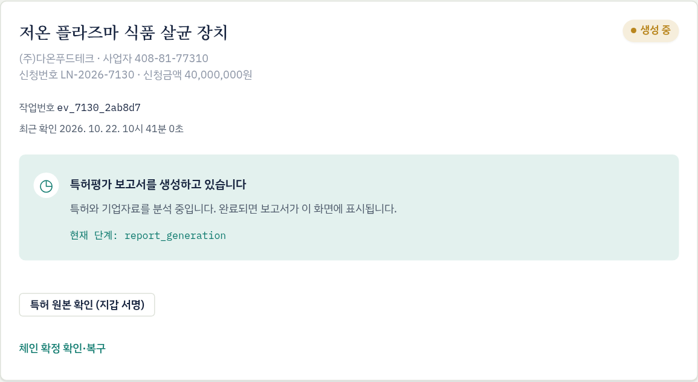
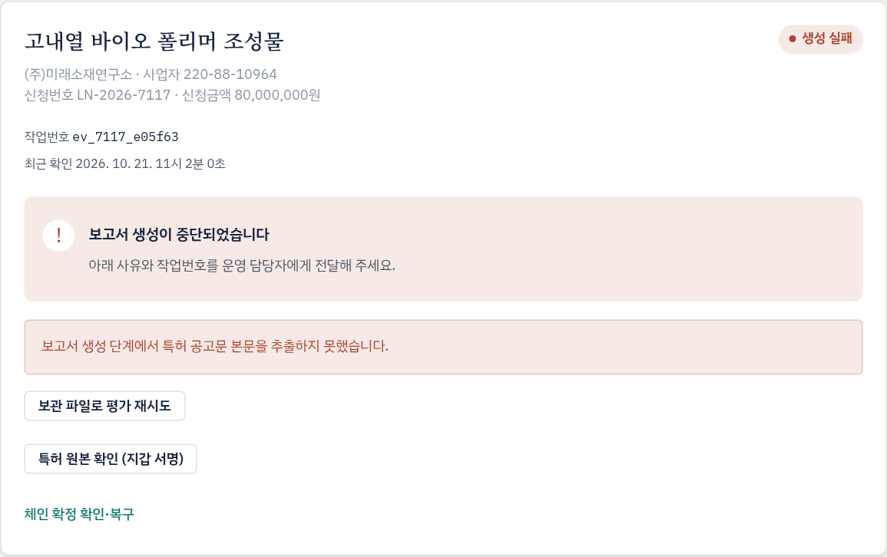
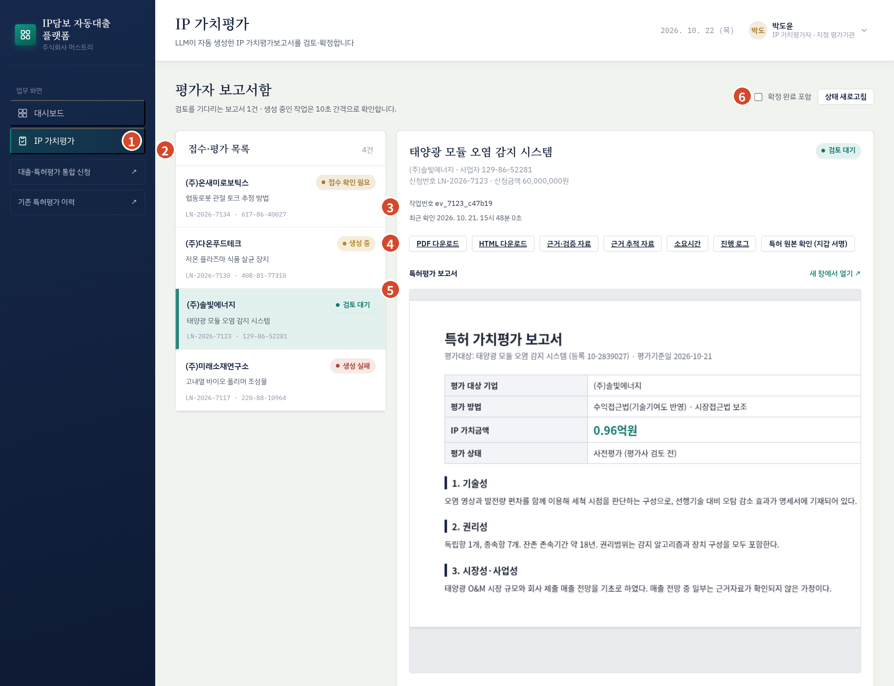
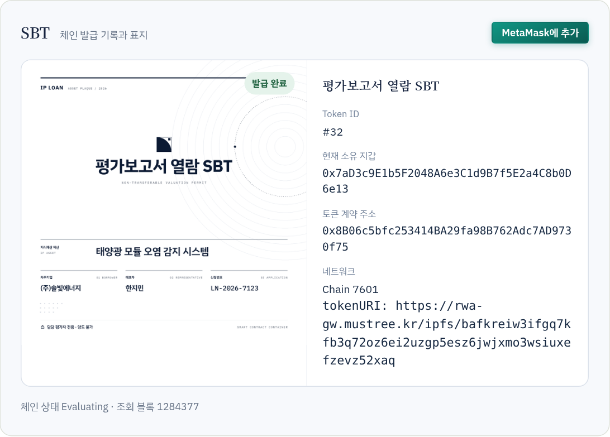
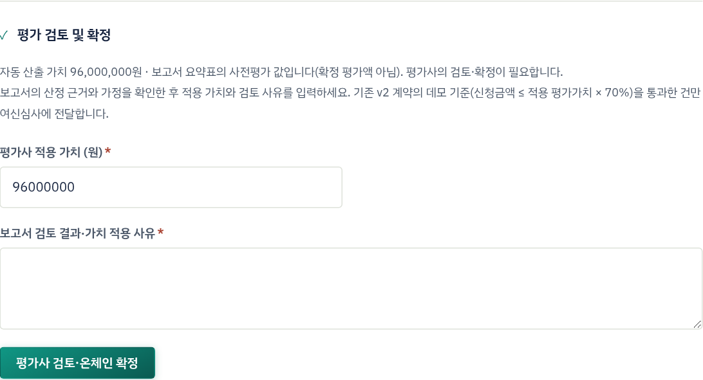
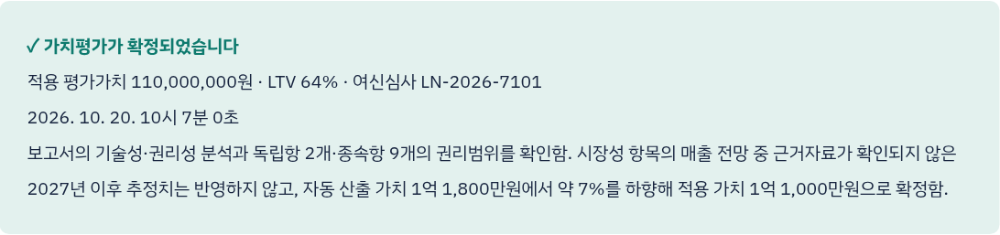

LLM 평가 엔진, 지정 평가기관, 플랫폼 운영사, 은행이 평가 단계에서 주고받는 일의 순서와 책임, 평가사의 화면 업무 절차, 소통·이견 조정 체계를 정한다.
| ① 자동 보고서는 초안 | LLM 평가 엔진이 만든 보고서와 자동 산출 가치는 평가사 검토 전의 사전평가 자료다. 블록체인에 기록되고 LTV 판정에 쓰이는 값은 평가사가 확정한 적용 가치다. |
|---|---|
| ② 평가의 독립성 | 평가사는 신청금액이나 LTV 통과 여부에 맞춰 가치를 조정하지 않는다. 적용 가치는 보고서 근거와 평가사의 전문 판단으로 정한다. |
| ③ 근거의 기록 | 자동 산출 가치와 다른 값을 적용하면 그 이유를 검토 사유에 남긴다. 검토 사유는 확정 내용에 포함되어 그 해시가 블록체인에 기록되므로 나중에 대조할 수 있다. |
| ④ 역할의 분리 | 평가기관은 담보가치를, 은행은 여신 여부를 판단한다. 같은 신청에서 평가사와 은행 담당자는 같은 지갑이 될 수 없다. |
| ⑤ 번호 기준 소통 | 기관 간 확인은 신청번호(LN-…)와 평가 작업번호를 기준으로 하고, 상태는 블록체인 기록을 기준으로 판단한다. |
| 기관 | 책임 영역 | 주요 업무 |
|---|---|---|
| 플랫폼 운영사 머스트리 | 시스템·연계 운영 | 평가사 지갑 등록·회수, 평가 서비스 연동과 장애 대응, 신규 배정 통보, 처리 현황 공유, 접수 확인 필요 건의 작업번호 확인 |
| LLM 평가 엔진 | 보고서 생성 | 공고전문 분석, 보고서·근거자료 생성, 작업 상태와 오류 내용 제공 |
| IP 가치평가기관 | 평가 검토·확정 | 소속 평가사 지정과 관리, 보고서 검토, 적용 가치·검토 사유 확정, 생성 실패 건 재시도, 평가 품질 관리 |
| NH농협은행 | 여신 판단 | 확정 평가 결과 활용, 평가 이견 제기, 최종 승인·거절 |
| 차주기업 | 자료 제공 | 공고전문 PDF와 기업정보 제출, 사업자번호·재무자료 확인 요청 대응 |
| 활동 | 차주 | 운영사 | 평가 엔진 | 평가기관 | 은행 |
|---|---|---|---|---|---|
| 평가사 지갑 등록·회수 | R/A | C | |||
| 대출 신청·공고전문 제출 | R/A | I | |||
| 담당 평가사 배정 (시스템 자동) | R/A | I | |||
| 보고서 자동 생성 | A | R | I | ||
| 생성 실패·미접수 건 재시도 | C | R/A | |||
| 사업자번호 확인 입력 | C | R/A | |||
| 접수 확인 필요 건 복구 | R/A | C | R | ||
| 보고서 검토·적용 가치 확정 | I | R/A | I | ||
| 평가 결과 이견 제기·조정 | C | C | R/A | ||
| 여신 최종 결정 | I | I | R/A | ||
| 평가 품질 표본 점검 | C | R/A | I |
R: 실행, A: 최종 책임, C: 협의, I: 통보. '접수 확인 필요 건 복구'는 운영사가 평가 서비스에서 작업번호를 확인하고, 평가사가 화면에서 복구를 실행한다.
| 단계 | 시작 조건 | 다음 단계로 넘기는 조건 | 지연 시 확인 주체 |
|---|---|---|---|
| ① 접수·배정 | 차주 신청 제출 | 평가 서비스 접수 완료(작업번호 발급), 신청 등록 거래 완료(SBT 발급) | 운영사 |
| ② 보고서 생성 | 평가 접수 | 상태가 '검토 대기'로 바뀌고 보고서 PDF·HTML이 제공됨 | 운영사 (평가 엔진) |
| ③ 평가사 검토 | 보고서 도착 | 적용 가치와 검토 사유 입력 완료 | 평가기관 |
| ④ 온체인 확정 | 평가사 서명 | 확정 거래가 블록체인에서 확정됨 | 평가기관 (거래 지연은 운영사) |
| ⑤ 은행 전달 | LTV 통과 | 은행 심사 대기 목록에 '심사중'으로 표시 | 운영사 |
| 화면 상태 | 의미 | 담당 | 조치 |
|---|---|---|---|
| 접수 대기 | 신청 저장, 평가 서비스 접수 전 | 평가사 | 잠시 기다린다. 계속되면 보관 파일로 평가 재시도 |
| 접수 확인 중 | 평가 서비스에 자료 전달 중 | — | 기다린다. |
| 생성 대기 | 접수 완료, 대기열 순서 대기 | — | 기다린다. 화면은 10초 간격으로 자동 갱신된다. |
| 생성 중 | 보고서 생성 중 | — | 기다린다(통상 10분 내외). 장시간 지속되면 4.4절 B5 |
| 기업 확인 필요 | 사업자번호 자동 확인 실패 | 평가사 | 사업자번호 확인에 신청서와 같은 10자리 번호 입력(4.4절 B4) |
| 검토 대기 | 보고서 도착 | 평가사 | 검토 후 확정(3.5절) |
| 생성 실패 | 보고서 생성 중단 | 평가사 → 운영사 | 사유 확인 후 재시도. 반복되면 운영사 보고(4.4절 B1) |
| 미접수 | 평가 서비스가 접수를 거부(대기열 초과 등) | 평가사 | 안내된 대기 시간 후 재시도(4.4절 B2) |
| 접수 확인 필요 | 접수 여부 불명. 중복 방지를 위해 자동 재접수 차단 | 운영사 → 평가사 | 운영사가 작업번호를 확인하고 평가사가 공급자 작업번호로 접수 복구(4.4절 B3) |
| 평가 확정 | 온체인 확정 완료 | — | '확정 완료 포함'을 체크하면 목록에 표시된다. |




| 버튼 | 내용 |
|---|---|
| PDF 다운로드 · HTML 다운로드 | 평가보고서 본문. 화면 가운데에서 미리 볼 수 있고 '새 창에서 열기'도 된다. |
| 근거·검증 자료 | 근거 확보 상태, 적용 가정, 검증 항목(quality) |
| 근거 추적 자료 | 보고서 문장별 근거 추적(trace) |
| 소요시간 · 진행 로그 | 단계별 생성 시간(timing)과 진행 기록(log). 오류 문의에 쓴다. |
| 특허 원본 확인 (지갑 서명) | 차주가 제출한 공고전문 원본. 평가 중(SBT 보유) 단계의 담당 평가사만 MetaMask 서명 후 내려받을 수 있다. |
| 보고서의 평가 대상 특허(등록번호·명칭)가 신청 정보와 같은가 | |
| 권리범위(청구항)와 잔존 존속기간 분석이 공고전문 원본과 맞는가 | |
| 시장 규모·매출 전망 등 주요 가정의 근거가 근거·검증 자료에서 확인되는가 | |
| 자동 산출 가치가 사전평가 값인지, 0 이하인지, 제공되지 않았는지 | |
| 보고서의 신용등급·재무 요약이 같은 기업(사업자번호)의 자료인가 |


| 상황 | 처리 기준 |
|---|---|
| 자동 산출 가치를 그대로 적용 | 보고서 근거와 가정이 타당하다고 판단한 경우. 검토 사유에 확인한 자료와 범위를 적는다. |
| 자동 산출 가치와 다른 값 적용 | 미확인 가정 제외, 유사 거래 사례 반영 등 조정이 필요한 경우. 조정 근거와 조정 폭을 적는다. |
| 자동 산출 가치가 '사전평가 값' | 확정 평가액이 아니므로 평가사가 근거를 검토해 결정한다. |
| 자동 산출 가치가 0 이하이거나 제공되지 않음 | 그 값으로는 LTV 판정을 통과할 수 없다. 평가사가 근거를 갖춘 가치를 산정하고 사유를 적는다. 근거가 부족하면 보수적으로 산정하며, 그 결과 자동 거절될 수 있다. |
| 보고서 근거가 명백히 부족하거나 대상 특허가 다름 | 확정하지 않는다. 작업번호와 함께 운영사에 보고한다. |
참고: 계약은 신청금액 ≤ 적용 가치 × 70%일 때 통과시킨다. 평가사는 이 기준을 알고 있어야 하지만, 3.1절 독립성 원칙에 따라 통과 여부에 맞춰 가치를 정하지 않는다.
| 구성 요소 | 작성 내용 |
|---|---|
| ① 검토 범위 | 확인한 자료(보고서, 근거·검증 자료, 공고전문 원본 등) |
| ② 핵심 판단 | 기술성·권리성·시장성 가운데 가치에 영향을 준 사항 |
| ③ 가치 조정 | 자동 산출 가치 대비 조정 여부, 조정 폭, 근거 |
| ④ 결론 | 적용 가치 |
| 시점 | 발신 | 수신 | 내용 |
|---|---|---|---|
| 신규 평가 배정 | 운영사 | 담당 평가사 | 신청번호, 기업명, 특허명, 보고서 도착 예정 |
| 생성 실패·접수 확인 필요 | 운영사 ↔ 평가사 | 상호 | 신청번호, 작업번호, 오류 내용, 조치 결과 |
| 평가 확정 (LTV 통과) | 운영사 | 담당 여신담당자 | 신청번호, 확정 일시 |
| 평가 확정 (LTV 미통과) | 운영사 | 차주 | 자동 거절 결과 |
| 최종 승인·거절 | 은행 | 차주 (운영사 참조) | 결과와 사유 (은행 절차에 따름) |
| 처리 현황 | 운영사 | 전 기관 | 단계별 진행 건수와 지연 건 (주 1회) |
통보 수단(업무 메신저, 이메일 등)과 담당자 연락처는 4.3절 비상 연락망과 함께 정한다.
| 단계 | 기한 | 비고 |
|---|---|---|
| 보고서 자동 생성 | 접수 후 10분 내외 | 시스템 목표. 평가 서비스 대기열에 따라 늦어질 수 있음 |
| 평가사 검토·확정 | 보고서 도착 후 2영업일 이내 | |
| 은행 최종 결정 | 심사 전달 후 5영업일 이내 | 은행 내부 승인 기간 포함 |
| 상환 기록 | 수납 확인 후 1영업일 이내 | |
| 이견 회신 | 이견 접수 후 3영업일 이내 | 평가기관 회신 |
은행이 확정된 평가 결과에 이견이 있을 때 다음 순서로 처리한다.
배정은 신청별로 고정되어 화면에서 바꿀 수 없다. 이해상충이나 장기 부재로 담당 평가사가 처리할 수 없으면 다음과 같이 한다.